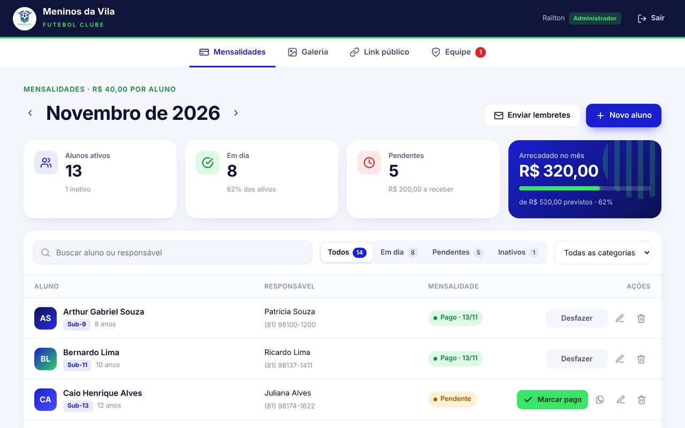
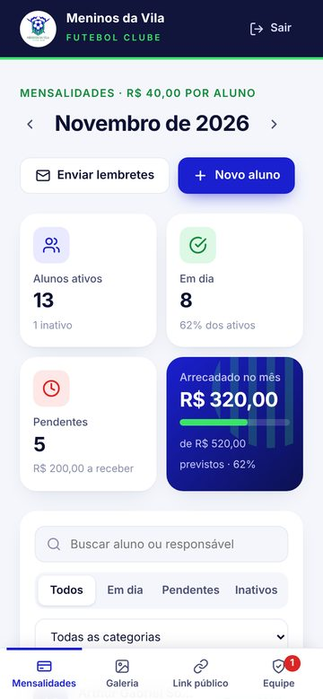

Projeto real · em atividade
Meninos da Vila FC: gestão de alunos e mensalidades
O controle de alunos e mensalidades de uma escolinha de futebol ficava no caderno e no WhatsApp. Criei um sistema web, pensado para o celular, com controle mensal de pagamentos, cobrança pelo WhatsApp, área pública para os pais e acesso por perfil do professor.
22testes E2E
2bugs encontrados
5perfis de acesso testados
4incidentes de produção resolvidos
Meu papel como QA
- Suíte Cypress cobrindo login, cadastro, pagamento e permissões, com asserções de regra de negócio (ex.: +R$ 40,00 no arrecadado)
- Bugs reportados e corrigidos: máscara de telefone que embaralhava dígitos e um clique perdido por condição de corrida
- Causa raiz em produção: limite de funções da plataforma, URL de configuração e chave de outro projeto
- Segurança e LGPD: permissões validadas no servidor e dados de menores protegidos
CypressJavaScriptNode.jsSupabase · PostgreSQLVercelSentryGit & GitHub
Desenvolvido com apoio de IA. Meu papel foi definir os requisitos, testar, investigar e reportar os bugs, e decidir as correções.